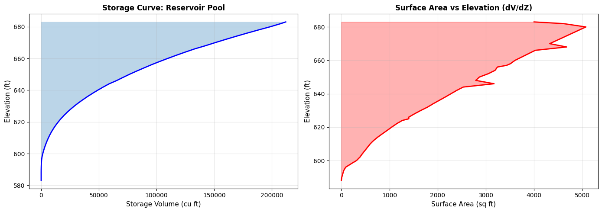

2D Geometry File Parsing¶
This notebook demonstrates parsing and manipulating 2D geometry elements from HEC-RAS plain text geometry files, including: - Storage Area operations - SA/2D Connection operations (dam breach analysis) - Dam crest profiles and gate extraction - Practical dam breach workflow
Overview¶
This notebook demonstrates extraction of 2D geometry elements from HEC-RAS geometry files. 2D areas use computational meshes rather than cross sections.
What You'll Learn¶
- Extract 2D flow area boundaries
- Parse computational mesh cell data
- Read Manning's n tables and breaklines
- Understand 2D/1D connections
LLM Forward Approach¶
- Verification: Compare mesh cell count to HEC-RAS GUI
- Visual Outputs: Plot 2D area boundaries and mesh
- Audit Trail: Export mesh geometry to GeoJSON
Reference Documentation¶
# =============================================================================
# DEVELOPMENT MODE TOGGLE
# =============================================================================
from pathlib import Path
import sys
USE_LOCAL_SOURCE = True # <-- TOGGLE THIS
if USE_LOCAL_SOURCE:
local_path = str(Path.cwd().parent)
if local_path not in sys.path:
sys.path.insert(0, local_path)
print(f"📁 LOCAL SOURCE MODE: Loading from {local_path}/ras_commander")
else:
print("📦 PIP PACKAGE MODE: Loading installed ras-commander")
# Import RAS Commander geometry modules
from ras_commander import (
RasGeometry, GeomLateral,
RasGeometryUtils,
HdfHydraulicTables,
RasExamples,
init_ras_project,
RasCmdr,
ras
)
# Additional imports
import pandas as pd
import numpy as np
import matplotlib.pyplot as plt
from IPython import display
# Verify which version loaded
import ras_commander
print(f"✓ Loaded: {ras_commander.__file__}")
print(f"Working directory: {Path.cwd()}")
📁 LOCAL SOURCE MODE: Loading from c:\GH\ras-commander/ras_commander
✓ Loaded: c:\GH\ras-commander\ras_commander\__init__.py
Working directory: c:\GH\ras-commander\examples
Parameters¶
Configure these values to customize the notebook for your project.
# =============================================================================
# PARAMETERS - Edit these to customize the notebook
# =============================================================================
from pathlib import Path
# Project Configuration
PROJECT_NAME = "BaldEagleCrkMulti2D" # 2D example project with storage areas and connections
RAS_VERSION = "6.6" # HEC-RAS version (6.3, 6.5, 6.6, etc.)
# Geometry Settings
GEOM_NUMBER = "12" # Geometry file with SA/2D connections
RIVER = None # Not applicable for 2D geometry
REACH = None # Not applicable for 2D geometry
CROSS_SECTION = None # Not applicable for 2D geometry
Package Setup and Imports¶
# Extract and initialize the 2D example project
project_path = RasExamples.extract_project(PROJECT_NAME, suffix="202")
init_ras_project(project_path, RAS_VERSION)
print(f"✓ Project initialized: {project_path}")
print(f"✓ Found {len(ras.geom_df)} geometry files")
print(f"✓ Found {len(ras.plan_df)} plan files")
2025-12-28 23:42:37 - ras_commander.RasExamples - INFO - Found zip file: C:\GH\ras-commander\examples\Example_Projects_6_6.zip
2025-12-28 23:42:37 - ras_commander.RasExamples - INFO - Loading project data from CSV...
2025-12-28 23:42:37 - ras_commander.RasExamples - INFO - Loaded 68 projects from CSV.
2025-12-28 23:42:37 - ras_commander.RasExamples - INFO - ----- RasExamples Extracting Project -----
2025-12-28 23:42:37 - ras_commander.RasExamples - INFO - Extracting project 'BaldEagleCrkMulti2D' as 'BaldEagleCrkMulti2D_202'
2025-12-28 23:42:37 - ras_commander.RasExamples - INFO - Folder 'BaldEagleCrkMulti2D_202' already exists. Deleting existing folder...
2025-12-28 23:42:37 - ras_commander.RasExamples - INFO - Existing folder 'BaldEagleCrkMulti2D_202' has been deleted.
2025-12-28 23:42:39 - ras_commander.RasExamples - INFO - Successfully extracted project 'BaldEagleCrkMulti2D' to C:\GH\ras-commander\examples\example_projects\BaldEagleCrkMulti2D_202
2025-12-28 23:42:39 - ras_commander.RasMap - INFO - Successfully parsed RASMapper file: C:\GH\ras-commander\examples\example_projects\BaldEagleCrkMulti2D_202\BaldEagleDamBrk.rasmap
✓ Project initialized: C:\GH\ras-commander\examples\example_projects\BaldEagleCrkMulti2D_202
✓ Found 10 geometry files
✓ Found 11 plan files
Section 1: Storage Area Operations¶
Storage areas represent reservoirs, detention basins, or other water storage features in the HEC-RAS model. We'll demonstrate extracting storage area properties and elevation-volume curves.
1.1 List Storage Areas¶
Select Geometry 12 (SA to 2D Connection)¶
Geometry 12 in the BaldEagleCrkMulti2D project contains storage areas and SA/2D connections for dam breach analysis.
# Select geometry 12 which has SA/2D connections for dam breach analysis
geom_number = GEOM_NUMBER
geom_row = ras.geom_df.loc[ras.geom_df['geom_number'] == geom_number].iloc[0]
geom_file = Path(geom_row["full_path"])
geom_hdf = Path(geom_row["hdf_path"])
print(f"Selected geometry: {geom_file.name}")
print(f"Geometry HDF: {geom_hdf.name if Path(geom_hdf).exists() else 'Not yet created'}")
Selected geometry: BaldEagleDamBrk.g12
Geometry HDF: BaldEagleDamBrk.g12.hdf
| geom_file | geom_number | full_path | hdf_path | |
|---|---|---|---|---|
| 0 | g06 | 06 | C:\GH\ras-commander\examples\example_projects\... | C:\GH\ras-commander\examples\example_projects\... |
| 1 | g08 | 08 | C:\GH\ras-commander\examples\example_projects\... | C:\GH\ras-commander\examples\example_projects\... |
| 2 | g10 | 10 | C:\GH\ras-commander\examples\example_projects\... | C:\GH\ras-commander\examples\example_projects\... |
| 3 | g11 | 11 | C:\GH\ras-commander\examples\example_projects\... | C:\GH\ras-commander\examples\example_projects\... |
| 4 | g12 | 12 | C:\GH\ras-commander\examples\example_projects\... | C:\GH\ras-commander\examples\example_projects\... |
| 5 | g09 | 09 | C:\GH\ras-commander\examples\example_projects\... | C:\GH\ras-commander\examples\example_projects\... |
| 6 | g13 | 13 | C:\GH\ras-commander\examples\example_projects\... | C:\GH\ras-commander\examples\example_projects\... |
| 7 | g01 | 01 | C:\GH\ras-commander\examples\example_projects\... | C:\GH\ras-commander\examples\example_projects\... |
| 8 | g03 | 03 | C:\GH\ras-commander\examples\example_projects\... | C:\GH\ras-commander\examples\example_projects\... |
| 9 | g02 | 02 | C:\GH\ras-commander\examples\example_projects\... | C:\GH\ras-commander\examples\example_projects\... |
# Path to dam breach geometry with storage areas
dam_geom_file = geom_file
print(f"Geometry file: {dam_geom_file.name}")
# Get storage areas (excluding 2D flow areas)
storage_areas = RasGeometry.get_storage_areas(dam_geom_file, exclude_2d=True)
print(f"\nTraditional storage areas found: {len(storage_areas)}")
for i, name in enumerate(storage_areas, 1):
print(f" {i}. {name}")
# Get all storage areas (including 2D)
all_storage = RasGeometry.get_storage_areas(dam_geom_file, exclude_2d=False)
print(f"\nAll storage areas (including 2D): {len(all_storage)}")
for i, name in enumerate(all_storage, 1):
print(f" {i}. {name}")
2025-12-28 23:42:39 - ras_commander.geom.GeomStorage - INFO - Found 1 storage areas in BaldEagleDamBrk.g12
2025-12-28 23:42:39 - ras_commander.geom.GeomStorage - INFO - Found 2 storage areas in BaldEagleDamBrk.g12
Geometry file: BaldEagleDamBrk.g12
Traditional storage areas found: 1
1. Reservoir Pool
All storage areas (including 2D): 2
1. BaldEagleCr
2. Reservoir Pool
1.2 Extract Elevation-Volume Curve¶
# Get elevation-volume curve for first storage area
if len(storage_areas) > 0:
area_name = storage_areas[0]
print(f"Extracting elevation-volume curve for: {area_name}")
try:
elev_vol = RasGeometry.get_storage_elevation_volume(dam_geom_file, area_name)
print(f"\nStorage Curve Data:")
print(f" Points: {len(elev_vol)}")
print(f" Elevation range: {elev_vol['Elevation'].min():.2f} to {elev_vol['Elevation'].max():.2f} ft")
print(f" Volume range: {elev_vol['Volume'].min():.0f} to {elev_vol['Volume'].max():.0f} cu ft")
print("\nFirst 10 points:")
display.display(elev_vol.head(10))
except ValueError as e:
print(f"\nNote: Could not extract elevation-volume curve: {e}")
print("This may be a 2D flow area without traditional storage curve data.")
print("Trying second storage area if available...")
if len(storage_areas) > 1:
area_name = storage_areas[1]
print(f"\nTrying: {area_name}")
try:
elev_vol = RasGeometry.get_storage_elevation_volume(dam_geom_file, area_name)
print(f"Storage Curve Data:")
print(f" Points: {len(elev_vol)}")
display.display(elev_vol.head(10))
except ValueError as e2:
print(f"Could not extract from {area_name} either: {e2}")
elev_vol = pd.DataFrame({'Elevation': [], 'Volume': []})
else:
elev_vol = pd.DataFrame({'Elevation': [], 'Volume': []})
else:
print("No traditional storage areas found in this geometry file")
elev_vol = pd.DataFrame({'Elevation': [], 'Volume': []})
2025-12-28 23:42:39 - ras_commander.geom.GeomStorage - INFO - Extracted 52 elevation-volume points for Reservoir Pool
Extracting elevation-volume curve for: Reservoir Pool
Storage Curve Data:
Points: 52
Elevation range: 583.00 to 683.00 ft
Volume range: 0 to 212000 cu ft
First 10 points:
| Elevation | Volume | |
|---|---|---|
| 0 | 583.0 | 0.00 |
| 1 | 588.0 | 0.01 |
| 2 | 590.0 | 20.00 |
| 3 | 592.0 | 80.00 |
| 4 | 594.0 | 180.00 |
| 5 | 596.0 | 360.00 |
| 6 | 598.0 | 760.00 |
| 7 | 600.0 | 1390.00 |
| 8 | 602.0 | 2160.00 |
| 9 | 604.0 | 3030.00 |
1.3 Visualize Storage Curve¶
if len(storage_areas) > 0 and len(elev_vol) > 0:
# Plot elevation-volume curve
fig, (ax1, ax2) = plt.subplots(1, 2, figsize=(14, 5))
# Plot 1: Volume vs Elevation
ax1.plot(elev_vol['Volume'], elev_vol['Elevation'], 'b-', linewidth=2)
ax1.fill_betweenx(elev_vol['Elevation'], 0, elev_vol['Volume'], alpha=0.3)
ax1.set_xlabel('Storage Volume (cu ft)', fontsize=11)
ax1.set_ylabel('Elevation (ft)', fontsize=11)
ax1.set_title(f'Storage Curve: {area_name}', fontsize=12, fontweight='bold')
ax1.grid(True, alpha=0.3)
# Plot 2: Incremental Storage (dV/dZ)
elev_vol['dV'] = elev_vol['Volume'].diff()
elev_vol['dZ'] = elev_vol['Elevation'].diff()
elev_vol['Surface_Area'] = elev_vol['dV'] / elev_vol['dZ']
ax2.plot(elev_vol['Surface_Area'], elev_vol['Elevation'], 'r-', linewidth=2)
ax2.fill_betweenx(elev_vol['Elevation'], 0, elev_vol['Surface_Area'], alpha=0.3, color='red')
ax2.set_xlabel('Surface Area (sq ft)', fontsize=11)
ax2.set_ylabel('Elevation (ft)', fontsize=11)
ax2.set_title('Surface Area vs Elevation (dV/dZ)', fontsize=12, fontweight='bold')
ax2.grid(True, alpha=0.3)
plt.tight_layout()
plt.show()
print("\nStorage Statistics:")
print(f" Total storage capacity: {elev_vol['Volume'].max():.0f} cu ft")
print(f" Elevation range: {elev_vol['Elevation'].max() - elev_vol['Elevation'].min():.1f} ft")
print(f" Average surface area: {elev_vol['Surface_Area'].mean():.0f} sq ft")
else:
print("Skipping storage visualization - no storage area data available")
print("Note: This geometry may use 2D flow areas instead of traditional storage areas.")

Storage Statistics:
Total storage capacity: 212000 cu ft
Elevation range: 100.0 ft
Average surface area: 2213 sq ft
Section 2: SA/2D Connection Operations¶
Connections link storage areas to 2D flow areas for dam breach analysis. We'll extract connection properties, dam crest profiles, and gate information.
2.1 List All Connections¶
# Extract all connections
connections = RasGeometry.get_connections(dam_geom_file)
print(f"SA/2D Connections found: {len(connections)}")
if len(connections) > 0:
print("\nConnection inventory:")
display.display(connections[['Connection_Name', 'Upstream_Area', 'Downstream_Area',
'Weir_Width', 'Weir_Coefficient', 'SE_Count', 'Num_Gates']])
print("\nConnection summary:")
print(f" Total weir width: {connections['Weir_Width'].sum():.1f} ft")
print(f" Total gates: {connections['Num_Gates'].sum():.0f}")
print(f" Weir coefficient range: {connections['Weir_Coefficient'].min():.2f} to {connections['Weir_Coefficient'].max():.2f}")
else:
print("No connections found in this geometry file")
2025-12-28 23:42:39 - ras_commander.geom.GeomLateral - INFO - Found 0 SA/2D connections in BaldEagleDamBrk.g12
SA/2D Connections found: 0
No connections found in this geometry file
2.2 Extract Dam Crest Profile¶
if len(connections) > 0:
# Get weir profile for first connection
conn_name = connections.iloc[0]['Connection_Name']
print(f"Extracting weir profile for connection: {conn_name}")
print(f" Upstream: {connections.iloc[0]['Upstream_Area']}")
print(f" Downstream: {connections.iloc[0]['Downstream_Area']}")
weir_profile = RasGeometry.get_connection_weir_profile(dam_geom_file, conn_name)
print(f"\nWeir/Dam Crest Profile:")
print(f" Points: {len(weir_profile)}")
print(f" Station range: {weir_profile['Station'].min():.1f} to {weir_profile['Station'].max():.1f} ft")
print(f" Elevation range: {weir_profile['Elevation'].min():.2f} to {weir_profile['Elevation'].max():.2f} ft")
print(f" Crest length: {weir_profile['Station'].max() - weir_profile['Station'].min():.1f} ft")
print("\nFirst 10 points:")
display.display(weir_profile.head(10))
else:
print("Skipping weir profile extraction - no connections found")
Skipping weir profile extraction - no connections found
2.3 Visualize Dam Crest Profile¶
if len(connections) > 0:
# Plot weir/dam crest profile
fig, ax = plt.subplots(figsize=(12, 6))
ax.plot(weir_profile['Station'], weir_profile['Elevation'],
'ro-', linewidth=2, markersize=6, label='Dam Crest')
ax.fill_between(weir_profile['Station'], weir_profile['Elevation'],
weir_profile['Elevation'].min() - 10,
alpha=0.3, color='brown')
ax.set_xlabel('Station Along Dam (ft)', fontsize=12)
ax.set_ylabel('Crest Elevation (ft)', fontsize=12)
ax.set_title(f'Dam Crest Profile: {conn_name}',
fontsize=14, fontweight='bold')
ax.grid(True, alpha=0.3)
ax.legend(fontsize=10)
# Add statistics
stats_text = f'Points: {len(weir_profile)}\n'
stats_text += f'Length: {weir_profile["Station"].max() - weir_profile["Station"].min():.1f} ft\n'
stats_text += f'Elev Range: {weir_profile["Elevation"].min():.1f} - {weir_profile["Elevation"].max():.1f} ft\n'
stats_text += f'Weir Coef: {connections.iloc[0]["Weir_Coefficient"]:.2f}'
ax.text(0.02, 0.98, stats_text,
transform=ax.transAxes,
verticalalignment='top',
bbox=dict(boxstyle='round', facecolor='wheat', alpha=0.5),
fontsize=10)
plt.tight_layout()
plt.show()
else:
print("Skipping visualization - no connections")
Skipping visualization - no connections
2.4 Extract Gate Information¶
if len(connections) > 0:
# Check which connections have gates
conn_with_gates = connections[connections['Num_Gates'] > 0]
if len(conn_with_gates) > 0:
# Get gates for first connection with gates
conn_name_with_gates = conn_with_gates.iloc[0]['Connection_Name']
print(f"Extracting gates for connection: {conn_name_with_gates}")
gates = RasGeometry.get_connection_gates(dam_geom_file, conn_name_with_gates)
print(f"\nGates found: {len(gates)}")
if len(gates) > 0:
print("\nGate parameters:")
display.display(gates[['Gate_Name', 'Width', 'Height', 'Invert', 'Gate_Coefficient']])
# Visualize gate geometry
fig, ax = plt.subplots(figsize=(8, 6))
for idx, gate in gates.iterrows():
# Draw gate as rectangle
width = gate['Width']
height = gate['Height']
invert = gate['Invert']
rect = plt.Rectangle((idx * 20, invert), width, height,
linewidth=2, edgecolor='blue',
facecolor='lightblue', alpha=0.5)
ax.add_patch(rect)
# Label gate
ax.text(idx * 20 + width/2, invert + height + 2,
gate['Gate_Name'],
ha='center', fontsize=10, fontweight='bold')
ax.text(idx * 20 + width/2, invert + height/2,
f"{width}' × {height}'\nInvert: {invert}'",
ha='center', va='center', fontsize=9)
ax.set_xlim(-5, len(gates) * 20 + 15)
ax.set_ylim(invert - 10, invert + height + 20)
ax.set_xlabel('Position', fontsize=11)
ax.set_ylabel('Elevation (ft)', fontsize=11)
ax.set_title(f'Gate Configuration: {conn_name_with_gates}',
fontsize=12, fontweight='bold')
ax.grid(True, alpha=0.3)
ax.set_aspect('equal')
plt.tight_layout()
plt.show()
else:
print("No gates found in any connections")
else:
print("Skipping gate extraction - no connections")
Skipping gate extraction - no connections
2.5 Analyze All Connections¶
if len(connections) > 0:
# Extract profiles for all connections
print("Processing all connections...")
for idx, conn in connections.iterrows():
conn_name = conn['Connection_Name']
try:
# Get weir profile
profile = RasGeometry.get_connection_weir_profile(dam_geom_file, conn_name)
# Get gates
gates = RasGeometry.get_connection_gates(dam_geom_file, conn_name)
print(f"{idx+1}. {conn_name}:")
print(f" {conn['Upstream_Area']} → {conn['Downstream_Area']}")
print(f" Weir profile: {len(profile)} points, length={profile['Station'].max():.0f} ft")
print(f" Gates: {len(gates)}")
if len(gates) > 0:
gate = gates.iloc[0]
print(f" {gate['Gate_Name']}: {gate['Width']:.0f}' W × {gate['Height']:.0f}' H, Invert={gate['Invert']:.0f}'")
print()
except Exception as e:
print(f"{idx+1}. {conn_name}: ERROR - {e}")
else:
print("No connections to process")
No connections to process
Section 3: Practical Application - Dam Breach Analysis Workflow¶
Real-world workflow combining storage areas, connections, and gate operations for dam breach analysis.
print("="*70)
print("DAM BREACH ANALYSIS WORKFLOW")
print("="*70)
# Step 1: Identify storage areas
print("\nStep 1: Storage Areas")
storage_areas = RasGeometry.get_storage_areas(dam_geom_file)
print(f" Found {len(storage_areas)} storage area(s)")
for area in storage_areas:
print(f" - {area}")
# Step 2: Get storage capacity
if len(storage_areas) > 0:
print("\nStep 2: Storage Capacity")
elev_vol = RasGeometry.get_storage_elevation_volume(dam_geom_file, storage_areas[0])
print(f" Maximum storage: {elev_vol['Volume'].max():.0f} cu ft")
print(f" Pool elevation range: {elev_vol['Elevation'].min():.1f} to {elev_vol['Elevation'].max():.1f} ft")
# Step 3: Identify connections
print("\nStep 3: Connections")
connections = RasGeometry.get_connections(dam_geom_file)
print(f" Found {len(connections)} connection(s)")
for idx, conn in connections.iterrows():
print(f" - {conn['Connection_Name']}: {conn['Upstream_Area']} → {conn['Downstream_Area']}")
# Step 4: Analyze dam crest
if len(connections) > 0:
dam_connections = connections[connections['Connection_Name'].str.contains('Dam', case=False, na=False)]
if len(dam_connections) > 0:
print("\nStep 4: Dam Crest Geometry")
dam_name = dam_connections.iloc[0]['Connection_Name']
dam_profile = RasGeometry.get_connection_weir_profile(dam_geom_file, dam_name)
print(f" Dam: {dam_name}")
print(f" Crest length: {dam_profile['Station'].max() - dam_profile['Station'].min():.0f} ft")
print(f" Crest elevation range: {dam_profile['Elevation'].min():.1f} to {dam_profile['Elevation'].max():.1f} ft")
print(f" Min crest elevation: {dam_profile['Elevation'].min():.1f} ft")
# Step 5: Check for gates
if len(connections) > 0:
print("\nStep 5: Gate Inventory")
total_gates = connections['Num_Gates'].sum()
print(f" Total gates in model: {total_gates:.0f}")
if total_gates > 0:
conn_with_gates = connections[connections['Num_Gates'] > 0]
for idx, conn in conn_with_gates.iterrows():
gates = RasGeometry.get_connection_gates(dam_geom_file, conn['Connection_Name'])
print(f" {conn['Connection_Name']}: {len(gates)} gate(s)")
for _, gate in gates.iterrows():
print(f" • {gate['Gate_Name']}: {gate['Width']:.0f}' × {gate['Height']:.0f}', Invert {gate['Invert']:.0f}'")
print("\n" + "="*70)
print("ANALYSIS COMPLETE")
print("="*70)
2025-12-28 23:42:39 - ras_commander.geom.GeomStorage - INFO - Found 1 storage areas in BaldEagleDamBrk.g12
2025-12-28 23:42:39 - ras_commander.geom.GeomStorage - INFO - Extracted 52 elevation-volume points for Reservoir Pool
2025-12-28 23:42:39 - ras_commander.geom.GeomLateral - INFO - Found 0 SA/2D connections in BaldEagleDamBrk.g12
======================================================================
DAM BREACH ANALYSIS WORKFLOW
======================================================================
Step 1: Storage Areas
Found 1 storage area(s)
- Reservoir Pool
Step 2: Storage Capacity
Maximum storage: 212000 cu ft
Pool elevation range: 583.0 to 683.0 ft
Step 3: Connections
Found 0 connection(s)
======================================================================
ANALYSIS COMPLETE
======================================================================
Summary¶
Methods Demonstrated¶
Storage Area Operations (RasGeometry):
- get_storage_areas() - List storage areas with metadata
- get_storage_curve() - Extract elevation-volume relationships
SA/2D Connection Operations (RasGeometry):
- get_connections() - List SA/2D connections
- get_connection_weir_profile() - Extract dam crest profiles
- get_connection_gates() - Extract gate geometry and parameters
Key Capabilities¶
- Storage Analysis: Extract elevation-volume curves for capacity analysis
- Dam Crest Extraction: Profile and weir coefficient data
- Gate Configuration: Position, dimensions, and operation parameters
- Breach Workflow: Complete analysis pipeline for dam breach studies
See Also¶
201_1d_plaintext_geometry.ipynb- 1D geometry operations (cross sections, HTAB)410_2d_hdf_data_extraction.ipynb- 2D HDF results extraction411_2d_hdf_pipes_and_pumps.ipynb- Pipe and pump analysis